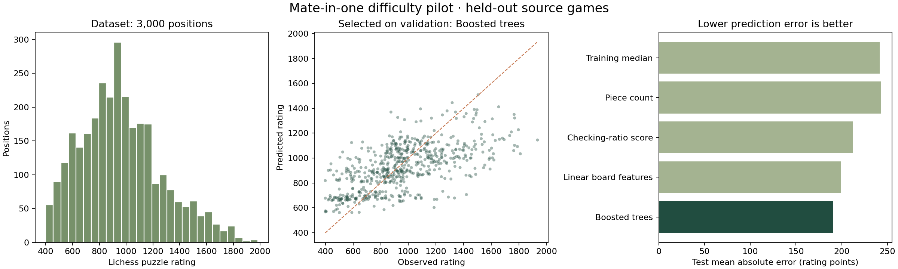

← Mate Lab trainerREPRODUCIBLE DIFFICULTY PILOT · V1
What makes a one-move mate harder?
Predicting Lichess puzzle ratings from board-derived features, with source-game-separated evaluation.
Observed resultThe validation-selected model was Boosted trees. Its held-out MAE was 190.7 rating points, compared with 241.3 for the training-median baseline (21.0% lower error).
This estimates a platform rating. It does not establish universal human difficulty. 
The comparisons
3,000 positions · 24 features · split counts {'train': 1800, 'validation': 600, 'test': 600}. Lower MAE is better; higher Spearman indicates better rank ordering.
The raw checking-ratio score, log(checking moves / mating moves), had test Spearman 0.522. The calibrated score fits its rating scale using training data only.
What we checked
Two independent chess implementations agreed on the legal, checking, and mating moves and check-reply counts for all 3,000 retained positions. Model settings were selected on validation data before reporting the test scores.
Limits worth discussing
- A seeded sample of a quality-filtered bounded prefix, not a representative sample of every puzzle or learner.
- Ratings are noisy, platform-specific aggregate outcomes. The CSV does not provide individual solve times or player attempts.
- Exact/mirrored duplicates are removed and source games are grouped; other near-duplicate tactical patterns may remain.
- The holdout becomes a development set if repeatedly inspected and used to redesign the model; use new held-out data for future confirmatory claims.
- Model associations are not causal explanations of human difficulty. Generalization to composed teaching puzzles is untested.
- No human learning improvement or player rating prediction is established by this study.